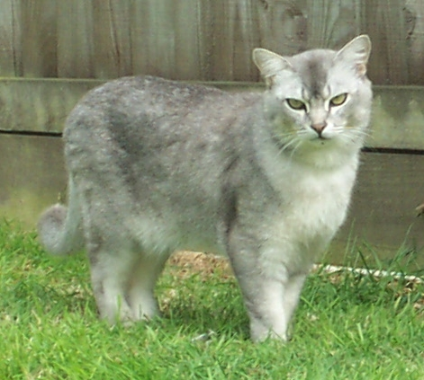
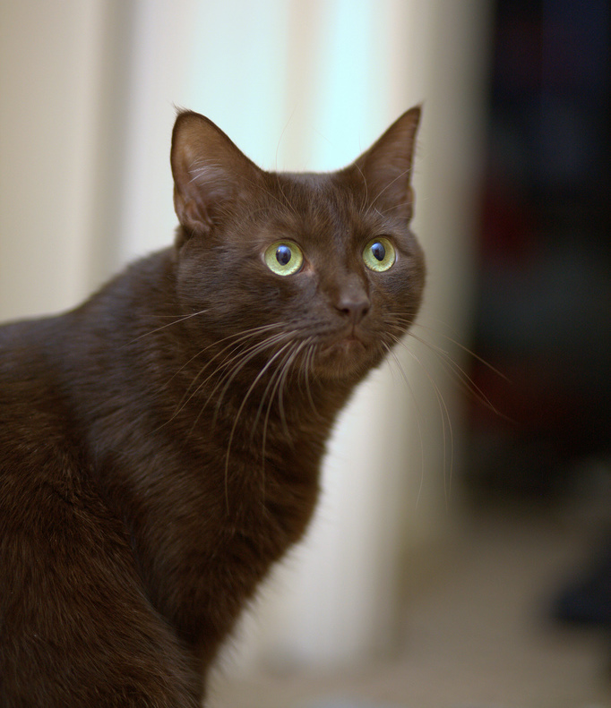

Наши домашние животные:
-
Бурмилла длинношёрстный
Бурмилла (англ. Burmilla) — порода кошек, появившаяся в 1981 году в результате случайной вязки бурманской кошки лилового окраса и персидского кота окраса шиншилла. Название породы происходит от слов Бурма + Шиншилла. Другое название породы — бурманская серебристая.
-
Гавана
Гавана — порода домашних кошек.
Гавана имеет очень характерную форму головы: длинную и узкую, с прямым профилем, миндалевидными глазами и большими, разведёнными в стороны ушами -
Мейн-кун

Мейн-кун (англ. Maine Coon) — порода кошек, которая произошла от кошек штата Мэн на северо-востоке США. Аборигенная порода кошек Северной Америки. Название «мейн-кун» является производным от двух слов. Первое — это название штата Мэн, а второе — производное от англ. raccoon, которое переводится как «енот». Старейшая американская порода кошек